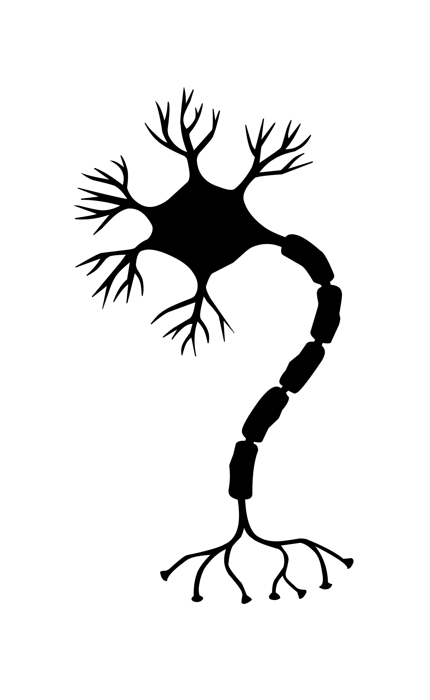
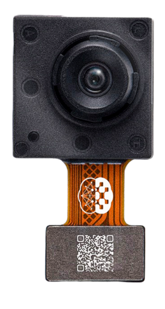

Neuromorphic computing
The next generation of computers
Jens Egholm Pedersen
PhD student
Stanford
KTH Royal Institute of Technology
jeped@kth.se
jegp@mastodon.social
jepedersen.dk
Video: Human Brain Project, 2023
A stick and a carrot
IEA, Energy and AI, 2025
Mead, 2023
The landauer limit

$E \geqslant T\ k_B$
Cold: Cheap
Hot: Expensive
Computers are physical systems
Transistors (computers)
$10^{-12}$ Joule per operation
Neurons (brains)
$10^{-20}$ Joule per operation
Shankar et al. 2023, Wikipedia
What does $10^8$ mean?
Humans live $\sim 10^2$ years. The universe is $\sim 10^{10}$ years old!
A human is $\sim 10^0$m tall. There are $10^{8}$m to the moon!
Humans walk $\sim 10^0$m/s. $3 \times 10^8$ m/s is the speed of light!
Neuromorphic computing
Digital architectures

Decentralized
Asynchronous
Energy efficient
How we program computers

Synchronous
Centralized
How brains are made
$$\tau \frac{dv}{dt} = - v + I$$

Pedersen et al., 2024
Asynchronous
Decentralized
How do we interact with them?
Analog vs. digital
The neuromorphic tech stack

Pedersen et al., 2023
What exists today?
Neuromorfic chips
NVIDIA 4090
~500W
2DKK / hour

Intel Loihi 2
~1W
1kr / month

Akida Brainchip
~100mW
1kr / year

Innatera T1
~1mW
1kr / century

Neuromorphic cameras
Prophesee EVK4
~100mW
Inivation DVXplorer
~500mW
Neuromofic integrated sensors


SynSense 2023
- Camera + mini neural network
- Energy consumption: 1mW, 1kr/century

- Camera + mini GPU
- Energy consumption: 10W, 10kr / month
Neuromorphics on the edge
de Croon 2022
Neuromorphic computing
Brain-inspired physical computing
Can save more than $1000\times$ energy today
Senses and computes much faster than digital
Neuromorphic computing
The next generation of computers
Jens Egholm Pedersen
PhD student
Stanford
KTH Royal Institute of Technology
jeped@kth.se
jegp@mastodon.social
jepedersen.dk
Video: Human Brain Project, 2023